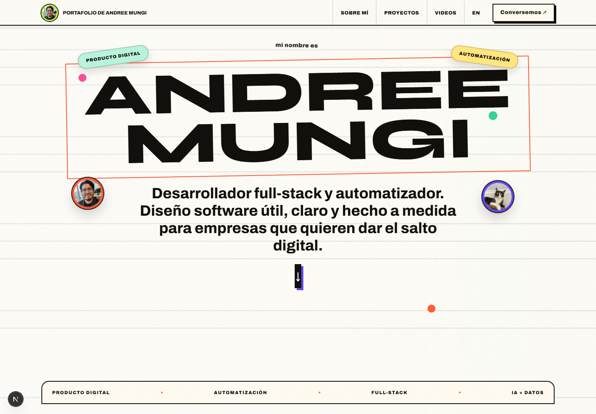
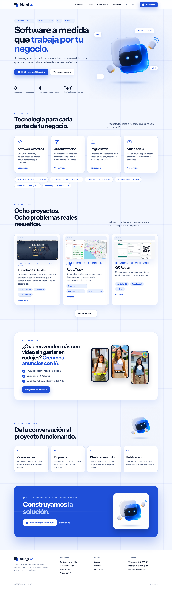
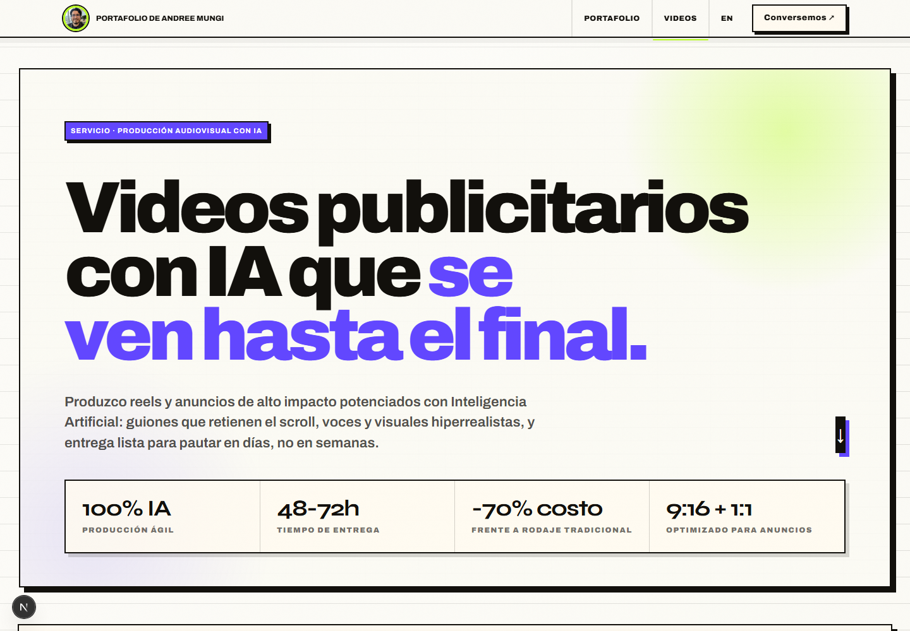
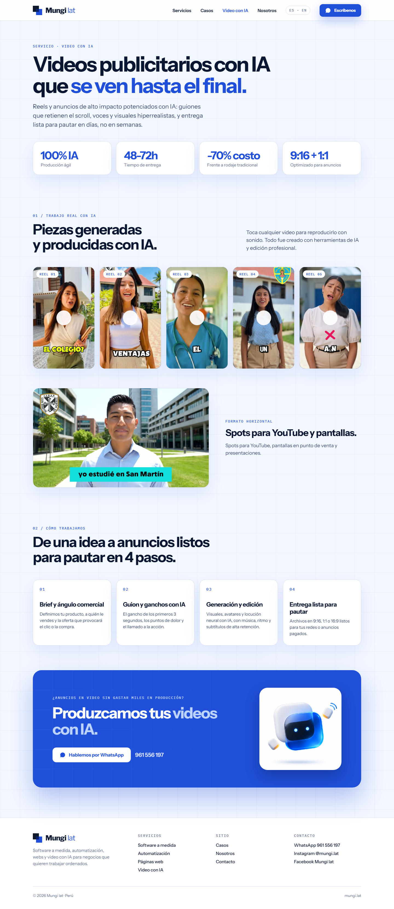

Mismo contenido, nueva identidad: la de Mungi lat (cobalto, cuadrícula técnica y el Cubo). Abajo, cómo se ve hoy frente a la propuesta y qué pasa con cada parte.




| Hoy | Propuesta | Contenido |
|---|---|---|
| Inicio · nombre «ANDREE MUNGI», foto y gato, tarjetas sueltas | Inicio · titular de marca, Cubo y servicios | Se reescribe: el copy deja de ser personal. |
| Sobre mí · foto, UTEC, 2+ años, Perú, gato | Nosotros · 3 principios y contacto | Se elimina la parte personal. Se conserva «Perú» y la idea de ejecución de punta a punta. |
| 8 proyectos en una sola página larga, con carruseles | Casos (índice) + una página por caso | Mismo contenido, textos y capturas (data/projects.json). Reto y solución pasan a la página del caso; «Diseñé/Construí» pasa a plural. |
| Video con IA · tarjeta en inicio + /servicios/videos | Video con IA · página propia | Mismas piezas y cifras. Confirmar vigencia de «-70 %» y «48-72 h». |
| Capacidades · 6 etiquetas | Etiquetas dentro de Servicios | Se migran idénticas. |
| /servicios/web · paquetes, tipos, proceso, FAQ (hoy fuera del menú) | Servicios → Páginas web | Se migra completa y pasa a verse en el menú. Pasa a voz «nosotros». |
| Pie · WhatsApp «Mandar mensaje a Andree» | Banda CTA cobalto + pie | Mismo WhatsApp (961 556 197). Se añaden Instagram y Facebook. |
| ES / EN | ES / EN | Se mantiene el selector de idioma. |
Titulares Instrument Sans 800 · etiquetas IBM Plex Mono · logo Libre Franklin. Base clara con cuadrícula, una banda cobalto sólida para cada llamado a la acción y el Cubo en inicio, nosotros, proceso y cierre.